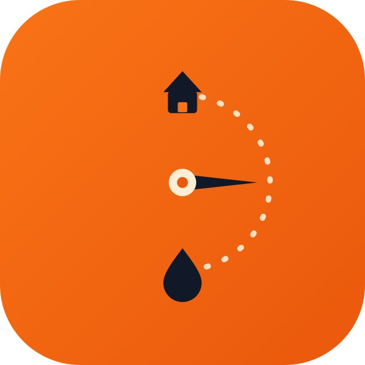

I want jobs close to my current route so I'm not wasting fuel on dead kilometres.
Let's see what's on offer today — hopefully a solid morning run in Umhlanga.
Is this job worth the drive? Six kilometres for 40 litres — that works for me.
Do I have enough Petrol 95 loaded to cover this order plus the next one?
I need to find this address without wasting time — the ETA is showing on the customer's side too.
Traffic on the N3 is bad today. I hope the customer's ETA updates in the app automatically.
I need that proof-of-delivery photo — in case this order is ever disputed I'm covered.
PIN matched. Clean close — on to the next one.
R1 240 for the morning shift — not bad. Let me see if there are more jobs near Westville.
If something goes wrong with the truck, I need help fast — I can't be stuck on the side of the road.